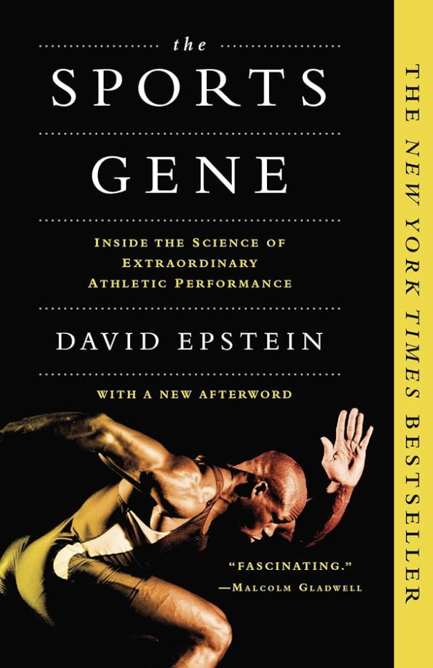
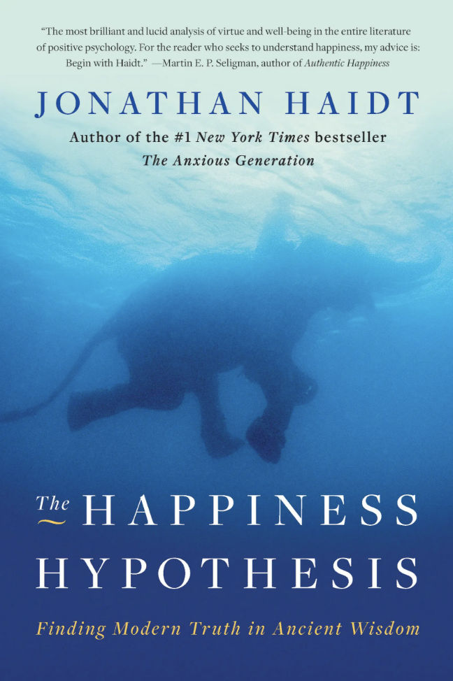
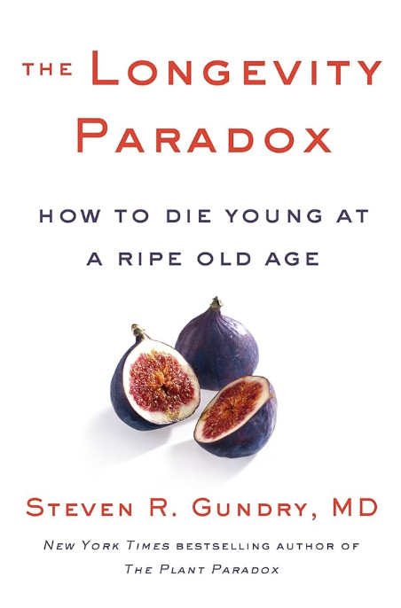

Last summer I took a trip to France to visit my sister and her husband. They recently moved there for graduate school, and were soon to be married. As a wedding present to them, I bought them tickets to the Olympics; we watched swimming, cycling, kayaking, and track! The weather was beautiful, albeit a bit hot, but I had the chance to visit the Louvre, the Eiffel Tower, and the Arc de Triomphe.
Korean Fried Chicken is one of my favorite foods. The crispy texture and spicy sauce make it irresistible. I love eating it with pickled radish and a cold drink! I will admit however that it is not the healthiest option, so it should be enjoyed in moderation.
Korean Fried Chicken is one of my favorite foods. The crispy texture and spicy sauce make it irresistible. I love eating it with pickled radish and a cold drink! I will admit however that it is not the healthiest option, so it should be enjoyed in moderation.
"| Title | Cover | Author | Summary |
|---|---|---|---|
| The Sports Gene |  | David Epstein | In this book, David Epstein discusses the interplay between genetics and environment in athletic performance. Through scientific research and compelling anecdotes, Epstein examines how factors like muscle composition, ancestry, and training shape elite athletes. The book challenges the idea of pure talent or pure training, arguing instead for a nuanced view that blends nature and nurture. |
| Humple Pi | Matthew Parker | In this book, Matthew Parker examines the real-world consequences of mathematical mistakes. Through entertaining stories, Parker highlights how even small numerical errors can lead to major disasters in engineering, finance, and everyday life. The book emphasizes the importance of math literacy and the often-overlooked role of mathematics in our modern world. | |
| The Happiness Hypothesis |  | Jonathan Haidt | In this book, Jonathan Haidt discusses the phenomenon of happiness. Why are people happy? What makes them unhappy? He explores the psychological and philosophical aspects of happiness, drawing on ancient wisdom and modern research to provide insights into the nature of happiness and how we can cultivate it in our lives. |
| The Longevity Paradox |  | Steven Gundry | In this book, Steven Gundry explores the important role our gut plays in our health and longevity. He discusses how the gut microbiome can influence our overall well-being and offers insights into maintaining a healthy gut. |